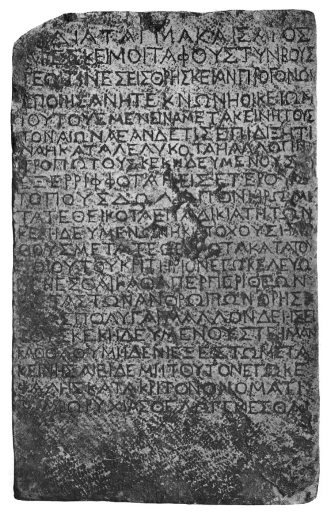

The Easter facts Bart Ehrman concedes in print
ConcededSkeptical scholars grant this themselves. Argue it from their sources, not yours.
What this argument does
It asks the other person to take nothing on your say-so. It builds only on what critical scholars grant, including atheists.
Then it asks one question. What explains all of it?
The first two facts
Jesus of Nazareth was crucified under Pontius Pilate. Bart Ehrman calls that one of the most secure facts in ancient history.
Tacitus and Josephus both mention it. Second, soon after, his followers had experiences they were sure were appearances of him alive.
Gerd Lüdemann was an atheist New Testament scholar. He wrote that it is "historically certain that Peter and the disciples had experiences after Jesus's death in which Jesus appeared to them as the risen Christ."
The third fact, and the honest caveat
The preaching began in Jerusalem almost at once. Paul, who had been hunting the movement down, changed sides.
So did James, the skeptical brother of Jesus. The empty tomb is more disputed, and say so.
Gary Habermas's much-quoted "about 75%" figure counts published articles, not scholars polled. Ehrman doubts even the burial by Joseph of Arimathea.
The Gospels do have women find the tomb, whose word carried little legal weight, and that still counts in its favour.
Their answer, at full strength
Ehrman replies that every granted fact has a natural cause. Visions of the recently dead are well documented in grief research.
A few sincere visions among shattered followers, read through Jewish hopes about the end, then retold for decades, gives you all we have. Mark, our first Gospel, has no appearance stories.
Crucified men were often left unburied. The women point leans on the criterion of embarrassment, which Rafael Rodríguez and the memory-studies school now treat as shaky.
Sincere change of life shows conviction, not its cause. The Millerites and the followers of Sabbatai Zevi were transformed too.
How strong is this argument?
The facts are granted by the field's leading skeptics, in print. The real fight is the step from those facts to a risen Jesus.
Say that out loud. You will be the most honest Christian that person has met.
And never quote the 75% figure without its caveat.
What to say
"Forget my Bible for a minute. Here are five things your side already grants.
What explains them?"


How they answer this — at its strongest
Ehrman says each fact here has a plain human cause, starting with grief visions.
Ehrman replies that every granted fact has a natural cause. Visions of the recently dead are common in grief studies. A few sincere visions among shattered followers, read through Jewish hopes about the end, then retold for decades, gives you all we have.
The empty tomb may have been added later. Mark, our earliest Gospel, ends with no appearance stories. Crucified men were often left unburied, or thrown into common graves.
The women-witnesses point leans on the criterion of embarrassment. Recent work treats that as shaky, above all Rafael Rodríguez and the memory-studies school. Women finding a tomb also fits Mark's habit of reversals rather well. And a changed life shows conviction, not its cause. The Millerites and the Sabbateans were changed too.
The verdict
Conceded: the facts are granted in print, and the fight is over what explains them.
Conceded — for the facts themselves, which is exactly how to use it. The crucifixion. The disciples' resurrection experiences. The early preaching in Jerusalem. The conversions of Paul and James. The field's leading skeptics grant all of it, in print.
The step from those facts to a risen Jesus is where the real argument lives. Say that out loud, and you will be the most credible Christian that skeptic has met. And do not cite the 75% empty-tomb figure without its caveat.
Sources
- Gary Habermas, 'Resurrection Research from 1975 to the Present' (JSHJ 2005)
- Bart Ehrman on the certainty of the crucifixion
- Gerd Lüdemann, What Really Happened to Jesus (1995)
- Dale Allison, The Resurrection of Jesus (T&T Clark, 2021) — the judicious middle
- N. T. Wright, The Resurrection of the Son of God